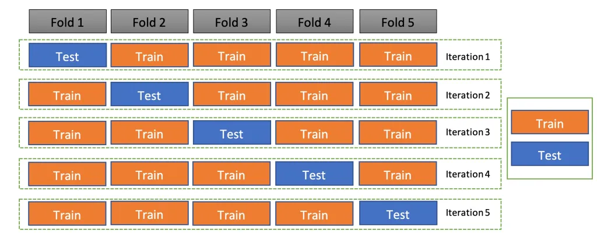

Code
# loading packages
#install.packages("corrplot")
library(tidyverse)
library(knitr)
library(ggthemes)
library(ggrepel)
library(dslabs)
library(ggplot2)
library(corrplot)This is an introduction to understanding cross-validation, its methods, and its importance in data science and statistics.
Cross-validation is a cornerstone methodology in the field of data science, essential for assessing the predictive performance of statistical models and ensuring their generalizability to unseen data. This resampling technique allows researchers to evaluate how models will perform in practice, addressing critical challenges like overfitting and underfitting, thereby ensuring robustness and reliability of model predictions across various data subsets.
The tutorial by (Song, Tang, and Wee 2021) further elaborates on the practical application of cross-validation, presenting a structured, step-by-step approach to assessing model generalizability and emphasizing the significance of the repeated k-folds technique for reducing bias in model evaluation.
The overall 5-step process to cross-validation introduced by them is as follows:
(Berrar et al. 2019) exposition on cross-validation underscores its importance in parameter tuning and model selection, providing a detailed overview of its common types, including k-fold and leave-one-out cross-validation, and emphasizing its role in balancing the bias-variance tradeoff for improved model performance.
Specifically, common types of cross-validation include:
Single Hold-Out Method: This is one of the more simple methods of cross-validation and tends to be less time-consuming to conduct (Yadav and Shukla 2016). It divides data into a training set and a test set, usually in a 70-30 or 90-10 split.
Monte Carlo cross-validation: Using random sampling without replacement from certain probability distributions when splitting your data sets (James 1980). It aims to decrease overfitting by allowing the algorithm to better explore the experimental space.
K-Fold Cross-Validation: The dataset is split into k equally sized folds. Each fold is used once as a test set while the rest serve as the training set.
Leave-One-Out Cross-Validation (LOOCV): This is a special case of k-fold cross-validation where k equals the number of data points (Shao and Er 2016). Each data point is used once as a test set.
Stratified Cross-Validation: Ensures each fold reflects the class proportions in the dataset, particularly useful for imbalanced datasets.
Repeated K-Fold Cross-Validation: Repeats the K-Fold process multiple times and averages the results.
The perspective of Berrar is enriched by (Schaffer 1993), who explores the significance of cross-validation in selecting optimal classification methods, highlighting its necessity in dealing with imbalanced datasets through stratified approaches.
(Zhang and Yang 2015) delve into the strategic use of cross-validation for model selection, particularly in high-dimensional settings, challenging traditional approaches and proposing the integration of AIC and BIC for optimal model estimation. AIC (Akaike Information Criterion) and BIC (Bayesian Information Criterion) are both measures used to evaluate the quality of a statistical model, often in the context of model selection. While they are not directly used for cross-validation, they serve a similar purpose in helping to choose between different models by considering both the goodness of fit and the complexity of the model.
Likewise, (Wong and Yeh 2019) contribute to the discourse by examining the reliability of accuracy estimates derived from k-fold cross-validation, cautioning against the uncritical increase of replications without considering the correlation between them, and recommending specific strategies for achieving more dependable accuracy estimates. More specifically, their experiments across 20 datasets indicate that accuracy estimates from different replications of k-fold cross-validation are generally highly correlated, especially as the number of folds increases. They instead recommend using a larger number of folds with fewer replications for performance evaluation. Particularly, their research concludes that ten-fold cross-validation yields the most significant scores among k-fold cross-validation techniques. A similar conclusion of the optimal for k is shared by (Marcot and Hanea 2021), as their evidence from their study that explores the ideal value of k for k-fold cross-validation analysis showed that the ideal value of k is 10, however, 5 can be sufficient in some cases.
Collectively, these papers illuminate the multifaceted nature of cross-validation, showcasing its critical role in model evaluation, selection, and generalization. From theoretical underpinnings to practical implementations, cross-validation emerges as an essential tool in a data scientist’s arsenal, ensuring models are not only predictive but also generalizable across diverse datasets and contexts.
In terms of the mathematical methodology, the article by Jung and Hu (2015) provides important equations for calculating the mean squared prediction error (MSPE) and mean squared error (MSE) as metrics to evaluate model performance. For instance, the overall test predictors are evaluated using the MSPE, calculated as:
\[ MSPE = \frac{1}{K} \sum_{i=1}^{K} MSE_i \]
where MSEi is the mean squared error for the ith fold, and K is the number of folds (Jung and Hu 2015).
(Rooij and Weeda 2020) once again highlight the ways in which cross-validation can be implemented on a dataset.
There are many techniques of cross-validation, the one being used depending on what needs to be accomplished. Many of which, mentioned in the introduction. The following will introduce some of those important techniques, as well as others, and research that delve deeper into their purpose.
(Jung and Hu 2015) introduce an advanced k-fold averaging cross-validation procedure, advocating for the averaging of parameter estimates across folds to yield more stable and efficient outcomes. This method demonstrates significant potential in handling high-dimensional data and improving parameter estimation.
For the k-fold cross-validation process, the steps are as follows and see Figure 1:
Randomly and evenly split the dataset into k-folds.
Use k-1 folds as the training set to fit the model.
Predict the response variable in the hold-out (kth) fold using the fitted model.
Calculate the prediction error for the response variable in the hold-out fold.
Repeat steps 2-4 k times, using each fold as a hold-out once.
Calculate the overall test predictors by averaging all k test predictors.
Source: (Ranjan 2021)
For clarity, the difference between K-folds and repeated K-folds, another method mentioned earlier, is as follows:
Repeated K-Fold Cross-Validation enhances the robustness of K-Fold by repeating the process multiple times and averaging the results. This method helps to reduce the variability of the single trial of K-Fold cross-validation, providing a more accurate estimate of the model’s ability to generalize to unseen data. Here’s the process:
Repeated Splitting: The data is split into k folds as before, but this process is repeated n times, with a different random split each time.
Model Evaluation: Just like in K-Fold, models are trained and evaluated k times on each repetition with different splits, leading to n*k total evaluations.
Final Estimation: The scores across all repeats are aggregated to provide a final measure.
Notably, this technique of repeated K-Folds is especially useful when the data set is not too large and there is a need to ensure the stability of the evaluation metrics across different splits of the data.
Ultimately, in statistical analysis, researchers are constantly innovating and refining cross-validation techniques to enhance model performance and address challenges associated with existing methodologies. (Filzmoser, Liebmann, and Varmuza 2009) sought to explore a method intended to improve the reliability and predictive accuracy of complex linear models, particularly those developed from small datasets, and to provide more accurate prediction error estimates for future observations. Their investigation was centered around the concept of repeated double cross-validation (rdCV), an advanced technique that entails a dual-phase partitioning of the dataset.
The initial phase involves dividing the data into training and testing sets, which serves as the foundation for prediction accuracy estimation. Subsequently, the second phase employs the training set from the first division in a further round of cross-validation. This dual-loop process is repeated multiple iterations, generating a comprehensive set of predicted outcomes. The aggregate of these outcomes not only facilitates the enhancement of the model’s performance but also aids in the more precise estimation of the variability in the model’s predictions.
Another technique, introduced by (Xu et al. 2018) is Representative Splitting Cross-Validation (RSCV), aiming to enhance the representativeness and uniformity of calibration and validation sets in experimental studies, with an emphasis on its utility for latent variable selection. This method employs the DUPLEX algorithm for data segmentation, followed by k-fold cross-validation on the divided sets.
Building on this, (Rabinowicz and Rosset 2022) explore the influence of correlation structures on cross-validation effectiveness, proposing a bias-correction measure, CVc, to address potential biases. This correction is unnecessary when dataset splitting maintains the distributional relationship between training and testing sets, ensuring unbiased cross-validation. Their analysis showed that CVc more accurately estimates generalization error compared to traditional cross-validation, remaining unbiased provided the covariance structure is correctly specified, even without the ideal prediction method. This research contributes to refining cross-validation techniques, particularly in handling complex data correlations.
Finally, (Lei 2020) introduces a method called Cross-Validation with Confidence (CVC) aimed at reducing overfitting, a common problem with traditional cross-validation that uses small splits and ends up with too-simple models. CVC works by checking the predicted risk of different models and using p-values to choose models that best fit without being overly complex. It has proven effective, particularly when dealing with a decent amount of data and models that don’t use too many predictors, resulting in simpler, easy-to-understand predictive models. However, CVC hasn’t yet been applied to unsupervised learning or models with binary outcomes, pointing out areas for further exploration.
This heart failure clinical records dataset, obtained via the UC Irvine Machine Learning Repository, contains the medical records of 299 patients who had heart failure, collected during their follow-up period, where each patient profile has 13 clinical features.
More specifically, the dataset comprises medical records of 299 heart failure patients from Faisalabad, Pakistan, collected between April and December 2015. It includes 13 clinical, body, and lifestyle features. The dataset was used to facilitate machine learning predictions on patient survival based solely on serum creatinine and ejection fraction levels. Various machine learning and biostatistical methods were employed for binary classification of survival, feature ranking, and to examine the predictability of survival using the mentioned key features. This study aims to demonstrate the potential of specific biomarkers in predicting heart failure outcomes and to streamline the prediction process for medical practitioners.
| Variable | Type | Characteristic |
|---|---|---|
| Age | Predictor | Integer |
| Anaemia | Predictor | Binary (1 = anemic, 0 = not) |
| creatine_phosphokinase | Predictor | Integer |
| Diabetes | Predictor | Binary (1 = diabetic, 0 = not) |
| ejection_fraction | Predictor | Integer |
| high_blood_pressure | Predictor | Binary (1 = HBP present, 0 = no HBP) |
| Platelets | Predictor | Continuous |
| serum_creatinine | Predictor | Continuous |
| serum_sodium | Predictor | Integer |
| Sex | Predictor | Binary (1 = M, 0 = F) |
| Smoking | Predictor | Binary (1 = smoker, 2 = not a smoker) |
| Time | Predictor | Integer |
| death_event | Response | Binary (1 = death, 0 = no death) |
# loading packages
#install.packages("corrplot")
library(tidyverse)
library(knitr)
library(ggthemes)
library(ggrepel)
library(dslabs)
library(ggplot2)
library(corrplot)# Load Data
data <- read.csv('heart_failure_clinical_records_dataset.csv')par(mfrow=c(2,4))
hist(data$age, main="Age")
hist(data$creatinine_phosphokinase, main="Creatinine Phosphokinase")
hist(data$ejection_fraction, main="Ejection Fraction")
hist(data$platelets, main="Platelets")
hist(data$serum_creatinine, main="Serum Creatinine")
hist(data$serum_sodium, main="Serum Sodium")
hist(data$time, main="Time")
par(mfrow=c(2,3))
hist(data$anaemia, main="Anaemia", breaks=2)
hist(data$diabetes, main="Diabetes", breaks=2)
hist(data$high_blood_pressure, main="High Blood Pressure", breaks=2)
hist(data$sex, main="Sex", breaks=2)
hist(data$smoking, main = "Smoking", breaks = 2)
hist(data$DEATH_EVENT,main = "Death Event",breaks=2)
colSums(is.na(data)) #total missing values per column age anaemia creatinine_phosphokinase
0 0 0
diabetes ejection_fraction high_blood_pressure
0 0 0
platelets serum_creatinine serum_sodium
0 0 0
sex smoking time
0 0 0
DEATH_EVENT
0 #Boxplots to look for outliers
par(mfrow=c(2,4))
boxplot(data$age, main="Age")
boxplot(data$creatinine_phosphokinase, main="Creatinine Phosphokinase")
boxplot(data$ejection_fraction, main="Ejection Fraction")
boxplot(data$platelets, main="Platelets")
boxplot(data$serum_creatinine, main="Serum Creatinine")
boxplot(data$serum_sodium, main="Serum Sodium")
boxplot(data$time, main="Time")
cor(data) %>%
corrplot(method = 'ellipse', type = 'upper')
par(mfrow=c(2,4))
plot(x=data$age,y=data$DEATH_EVENT, main="Age", ylim = c(-.5,1.5))
plot(x=data$creatinine_phosphokinase,y=data$DEATH_EVENT, main="Creatinine Phosphokinase",ylim = c(-.5,1.5))
plot(x=data$ejection_fraction,y=data$DEATH_EVENT, main="Ejection Fraction",ylim = c(-.5,1.5))
plot(x=data$platelets,y=data$DEATH_EVENT, main="Platelets",ylim = c(-.5,1.5))
plot(x=data$serum_creatinine,y=data$DEATH_EVENT, main="Serum Creatinine",ylim = c(-.5,1.5))
plot(x=data$serum_sodium,y=data$DEATH_EVENT, main="Serum Sodium",ylim = c(-.5,1.5))
plot(x=data$time,y=data$DEATH_EVENT, main="Time",ylim = c(-.5,1.5))
library(boot)
set.seed(43269)
tenfold_m1 <- glm(DEATH_EVENT ~ age + anaemia + creatinine_phosphokinase + diabetes + ejection_fraction + high_blood_pressure + platelets + serum_creatinine + serum_sodium + sex + smoking + time,
data = data,
family = "binomial"(link = "logit"))
cv.glm(data, tenfold_m1, K=10)$delta[1] 0.1335980 0.1327269set.seed(85329)
tenfold_m2 <- glm(DEATH_EVENT ~ ejection_fraction + serum_creatinine,
data = data,
family = "binomial"(link = "logit"))
cv.glm(data, tenfold_m2, K=10)$delta[1] 0.1817633 0.1816103In model 1, all predictor variables are included. In model 2, only ejection fraction and serum creatinine are included, as the researchers that provided the data set came to the conclusion that death events could be predicted using those 2 variables alone. Interestingly enough, the first model that included all variables produced a lower MSE (mean square error), indicating that from this CV test, model one would be better to use than model 2.
More references to be added once more sections of papers are completed